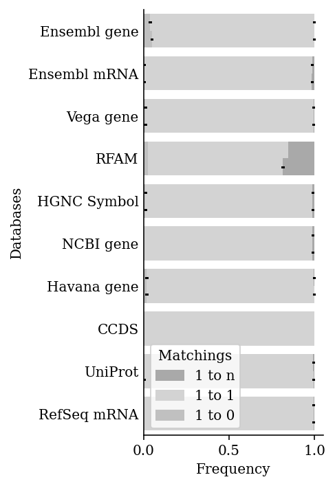

Calculations with Random Data
[1]:
%load_ext autoreload
%autoreload 2
[2]:
import sys
sys.path.append("/home/icb/kemal.inecik/work/codes/idtrack")
[3]:
import os
import time
import scanpy as sc
import idtrack
import pickle
import tqdm
import random
import multiprocessing
[ ]:
!ls -l /lustre/groups/ml01/workspace/kemal.inecik/idtrack_temp/
[4]:
local_dir = "/lustre/groups/ml01/workspace/kemal.inecik/idtrack_temp"
idt = idtrack.API(local_repository=local_dir)
idt.configure_logger()
idt.initialize_graph(organism_name='homo_sapiens', last_ensembl_release=114, return_test=True)
idt.calculate_graph_caches()
2025-05-29 07:55:35 INFO:graph_maker: The graph is being read: /lustre/groups/ml01/workspace/kemal.inecik/idtrack_temp/graph_homo_sapiens_min79_max114_narrow.pickle
2025-05-29 07:56:38 INFO:the_graph: Cached properties being calculated: combined_edges
2025-05-29 07:57:17 INFO:the_graph: Cached properties being calculated: combined_edges_assembly_specific_genes
2025-05-29 07:57:20 INFO:the_graph: Cached properties being calculated: combined_edges_genes
2025-05-29 07:57:34 INFO:the_graph: Cached properties being calculated: lower_chars_graph
2025-05-29 07:57:34 INFO:the_graph: Cached properties being calculated: get_active_ranges_of_id
2025-05-29 07:58:14 INFO:the_graph: Cached properties being calculated: available_external_databases
2025-05-29 07:58:16 INFO:the_graph: Cached properties being calculated: external_database_connection_form
2025-05-29 07:59:01 INFO:the_graph: Cached properties being calculated: available_genome_assemblies
2025-05-29 07:59:03 INFO:the_graph: Cached properties being calculated: available_external_databases_assembly
2025-05-29 07:59:04 INFO:the_graph: Cached properties being calculated: node_trios
[5]:
def get_matching(convert_output):
d = idt.classify_multiple_conversion([convert_output])
return {i: len(d[i]) for i in ["matching_1_to_0", "matching_1_to_1", "matching_1_to_n"]}
[6]:
subset_external = ["assembly_38_ensembl_gene", 'assembly_38_ensembl_transcript',
"Vega gene", "RFAM", "HGNC Symbol", "NCBI gene",
"Havana gene", "CCDS", "Uniprot/SWISSPROT", "RefSeq_mRNA"]
[7]:
for iteration in [101, 102, 103]:
identifier_dict = dict()
for n in idt.track.graph.nodes:
for j in {i[0] for i in idt.track.graph.node_trios[n]}:
if j in identifier_dict:
identifier_dict[j].append(n)
else:
identifier_dict[j] = [n]
for ind, j in enumerate(identifier_dict):
random.seed(ind + iteration)
try:
identifier_dict[j] = random.sample(sorted(set(identifier_dict[j])), 1000)
except ValueError:
# print(j, end=", ")
identifier_dict[j] = random.sample(sorted(set(identifier_dict[j])), len(identifier_dict[j]))
# Example IDs
# for j in identifier_dict:
# print(j, end=": ")
# print(identifier_dict[j][:10], end="\n\n")
identifier_duos = dict()
for ind1, i in enumerate(subset_external):
if i not in identifier_duos:
identifier_duos[i] = list()
for ind2, j in enumerate(identifier_dict[i]):
random.seed(ind1 + ind2 + iteration)
trio = random.choice(list(idt.track.graph.node_trios[j]))
if trio[2] <= 107:
identifier_duos[i].append((j, trio[2]))
all_results = dict()
for fer in [False, True]:
print(f"With From Release: {fer}")
r = dict()
for ter in [114, 110, 107, 98, 89, 80]:
print(f"To Ensembl Release: {ter}")
results = dict()
for i in identifier_duos:
print(f"{i}", end=", ")
if i not in results:
results[i] = {'matching_1_to_0': 0, 'matching_1_to_1': 0, 'matching_1_to_n': 0}
t0 = time.time()
for j in identifier_duos[i]:
c = idt.convert_identifier(j[0], from_release=j[1] if fer else None, to_release=ter, final_database="ensembl_gene")
gm = get_matching(c)
for k in gm:
results[i][k] += gm[k]
t1 = time.time()
results[i].update({"time": t1-t0, "count": len(identifier_duos[i])})
r[ter] = results
print()
all_results["with_from_release" if fer else "no_from_release"] = r
time_suffix = time.strftime("%Y%m%d-%H%M%S", time.gmtime())
local_dir = "/lustre/groups/ml01/workspace/kemal.inecik/idtrack_temp"
file_path = os.path.join(local_dir, f"results_for_random_external_conversions_{iteration}_{time_suffix}.pk")
with open(file_path, 'wb') as handle:
pickle.dump(all_results, handle)
print(f"Saved: {file_path}")
print()
[ ]:
# choose an external database, and ensembl gene id
# choose random 10000 IDs from random ens releases
# convert to ensembl gene id 107
# get 1-to-1, 1-to-0, 1-to-n matchings, barplot...
[ ]:
# choose hgnc, ncbi, uniprot, ensembl gene
# make from ensembl release 80 to 105, incrementing 3 or 5
# get 1-to-1, 1-to-0, 1-to-n matchings, barplot...
Print plot
[1]:
import sys
sys.path.append("../..")
[2]:
import os
import time
import pickle
import copy
import random
import pandas as pd
import matplotlib.pyplot as plt
import seaborn as sns
import matplotlib.patches as mpatches
[3]:
%matplotlib inline
%config InlineBackend.figure_format='retina'
[4]:
plt.rcParams['font.family'] = 'DeJavu Serif'
plt.rcParams['font.serif'] = ['Times New Roman']
[5]:
local_dir = "/lustre/groups/ml01/workspace/kemal.inecik/idtrack_temp"
[6]:
!ls -lh /lustre/groups/ml01/workspace/kemal.inecik/idtrack_temp
total 15G
-rw-r--r--. 1 kemal.inecik OG-ICB-User 18K Feb 2 10:38 figure_across_datasets.pdf
-rw-r--r--. 1 kemal.inecik OG-ICB-User 16K Feb 2 10:33 figure_across_releases.pdf
-rw-rwxr--+ 1 kemal.inecik OG-ICB-User 622M Oct 17 17:18 graph_homo_sapiens_ens107_min79_narrow.pickle
-rw-rwxr--+ 1 kemal.inecik OG-ICB-User 7.2G Oct 17 15:01 homo_sapiens_assembly-37.h5
-rw-rwxr--+ 1 kemal.inecik OG-ICB-User 7.0G Oct 31 09:44 homo_sapiens_assembly-38.h5
-rw-rwxr--+ 1 kemal.inecik OG-ICB-User 45K Aug 12 15:57 homo_sapiens_externals_modified.yml
-rw-rwxr--+ 1 kemal.inecik OG-ICB-User 2.2M Nov 10 10:48 results_for_hlca_core_only_ensembl_gene_20221110-094821.pk
-rw-rwxr--+ 1 kemal.inecik OG-ICB-User 2.4M Nov 10 10:43 results_for_hlca_core_only_HGNC Symbol_20221110-094335.pk
-rw-rwxr--+ 1 kemal.inecik OG-ICB-User 57M Nov 1 20:13 results_for_hlca_datasets_ensembl_gene_20221101-191345.pk
-rw-r--r--. 1 kemal.inecik OG-ICB-User 57M Jan 30 03:31 results_for_hlca_datasets_ensembl_gene_20230130-023149.pk
-rw-rwxr--+ 1 kemal.inecik OG-ICB-User 55M Nov 1 18:50 results_for_hlca_datasets_HGNC Symbol_20221101-175029.pk
-rw-r--r--. 1 kemal.inecik OG-ICB-User 55M Jan 30 01:47 results_for_hlca_datasets_HGNC Symbol_20230130-004722.pk
-rw-r--r--. 1 kemal.inecik OG-ICB-User 3.1K Jan 30 20:48 results_for_random_external_conversions_1001_20230130-194819.pk
-rw-r--r--. 1 kemal.inecik OG-ICB-User 3.1K Jan 30 20:58 results_for_random_external_conversions_1002_20230130-195844.pk
-rw-r--r--. 1 kemal.inecik OG-ICB-User 3.1K Jan 30 21:27 results_for_random_external_conversions_1011_20230130-202727.pk
-rw-r--r--. 1 kemal.inecik OG-ICB-User 3.1K Jan 30 21:41 results_for_random_external_conversions_1012_20230130-204143.pk
-rw-r--r--. 1 kemal.inecik OG-ICB-User 3.1K Jan 30 22:33 results_for_random_external_conversions_1031_20230130-213318.pk
-rw-r--r--. 1 kemal.inecik OG-ICB-User 3.1K Jan 30 00:37 results_for_random_external_conversions_1_20230129-233747.pk
-rw-r--r--. 1 kemal.inecik OG-ICB-User 3.1K Jan 30 04:12 results_for_random_external_conversions_2_20230130-031239.pk
[7]:
with open(local_dir + "/results_for_random_external_conversions_1_20230129-233747.pk", 'rb') as pickle_file_1:
res1 = pickle.load(pickle_file_1)
with open(local_dir + "/results_for_random_external_conversions_2_20230130-031239.pk", 'rb') as pickle_file_2:
res2 = pickle.load(pickle_file_2)
with open(local_dir + "/results_for_random_external_conversions_1001_20230130-194819.pk", 'rb') as pickle_file_3:
res3 = pickle.load(pickle_file_3)
with open(local_dir + "/results_for_random_external_conversions_1002_20230130-195844.pk", 'rb') as pickle_file_4:
res4 = pickle.load(pickle_file_4)
with open(local_dir + "/results_for_random_external_conversions_1011_20230130-202727.pk", 'rb') as pickle_file_5:
res5 = pickle.load(pickle_file_5)
with open(local_dir + "/results_for_random_external_conversions_1012_20230130-204143.pk", 'rb') as pickle_file_6:
res6 = pickle.load(pickle_file_6)
with open(local_dir + "/results_for_random_external_conversions_1031_20230130-213318.pk", 'rb') as pickle_file_7:
res7 = pickle.load(pickle_file_7)
res = [res1, res2, res3, res4, res5, res6, res7]
[8]:
df_list = list()
for r, rv in enumerate(res):
for i, iv in rv.items():
for j, jv in iv.items():
for k, kv in jv.items():
count = kv["count"]
for l, lv in kv.items():
if l.startswith("matching_1"):
df_list.append([r+1, i, j, k, l, lv/count])
df = pd.DataFrame(df_list, columns=["replicate", "from_release", "to_release", "database", "metric", "score"])
df["database"] = df["database"].replace({'assembly_38_ensembl_gene': "Ensembl gene",
'assembly_38_ensembl_transcript': "Ensembl mRNA",
"Uniprot/SWISSPROT": "UniProt",
"RefSeq_mRNA": "RefSeq mRNA"})
[9]:
k__ = list()
for ind, j in df.iterrows():
s = copy.deepcopy(j['score'])
if ind % 3 == 0:
total = s
else:
total += s
j['score'] = total
k__.append(j)
df_cum = pd.DataFrame(k__)
df_cum
[9]:
| replicate | from_release | to_release | database | metric | score | |
|---|---|---|---|---|---|---|
| 0 | 1 | no_from_release | 107 | Ensembl gene | matching_1_to_0 | 0.040 |
| 1 | 1 | no_from_release | 107 | Ensembl gene | matching_1_to_1 | 0.999 |
| 2 | 1 | no_from_release | 107 | Ensembl gene | matching_1_to_n | 1.000 |
| 3 | 1 | no_from_release | 107 | Ensembl mRNA | matching_1_to_0 | 0.005 |
| 4 | 1 | no_from_release | 107 | Ensembl mRNA | matching_1_to_1 | 0.985 |
| ... | ... | ... | ... | ... | ... | ... |
| 1675 | 7 | with_from_release | 80 | UniProt | matching_1_to_1 | 0.996 |
| 1676 | 7 | with_from_release | 80 | UniProt | matching_1_to_n | 1.000 |
| 1677 | 7 | with_from_release | 80 | RefSeq mRNA | matching_1_to_0 | 0.001 |
| 1678 | 7 | with_from_release | 80 | RefSeq mRNA | matching_1_to_1 | 0.993 |
| 1679 | 7 | with_from_release | 80 | RefSeq mRNA | matching_1_to_n | 1.000 |
1680 rows × 6 columns
[10]:
plt.figure(figsize=(3.5,5))
sns.barplot(data=df_cum[(df_cum["metric"]=="matching_1_to_n") & (df_cum["to_release"]==107)],
y="database",
hue="from_release", errwidth=1.5,
x="score",
palette=['darkgray', 'darkgray'], errcolor='black'
)
sns.barplot(data=df_cum[(df_cum["metric"]=="matching_1_to_1") & (df_cum["to_release"]==107)],
y="database",
hue="from_release", errwidth=1.5,
x="score",
palette=['lightgray', 'lightgray'], errcolor='black'
)
m = sns.barplot(data=df_cum[(df_cum["metric"]=="matching_1_to_0") & (df_cum["to_release"]==107)],
y="database",
hue="from_release", errwidth=1.5,
x="score",
palette=['silver', 'silver'], errcolor='black'
)
darkgray_patch = mpatches.Patch(color='darkgray', label='1 to n')
lightgray_patch = mpatches.Patch(color='lightgray', label='1 to 1')
silver_patch = mpatches.Patch(color='silver', label='1 to 0')
plt.legend(handles=[darkgray_patch, lightgray_patch, silver_patch], loc='lower left', title="Matchings")
sns.despine()
plt.tight_layout()
plt.xlabel("Frequency")
plt.ylabel("Databases")
#plt.gca().legend().set_visible(False)
plt.gca().tick_params(axis='y', which='both',length=0)
plt.savefig(local_dir + "/figure_across_datasets.pdf")

[14]:
plt.figure(figsize=(3.5,5))
df2=df[df["database"].isin(["Ensembl gene", "HGNC Symbol", "UniProt", "Vega gene", "NCBI gene"])]
sns.barplot(data=df2[(df2["metric"]=="matching_1_to_1") & (df2["from_release"]=="with_from_release")],
y="database",
hue="to_release", errwidth=0.75,
x="score",
palette=['gainsboro', 'lightgray', 'silver', 'darkgray'], errcolor='black'
)
sns.despine()
plt.tight_layout()
plt.xlabel("Frequency")
plt.ylabel("")
plt.xlim((0.85, 1.0))
plt.gca().legend(loc='lower left', title="Target ER")
plt.gca().tick_params(axis='y', which='both',length=0)
plt.savefig(local_dir + "/figure_across_releases.pdf")
[ ]:
# time and boxplot for
[ ]:
[ ]:
[ ]:
[ ]: